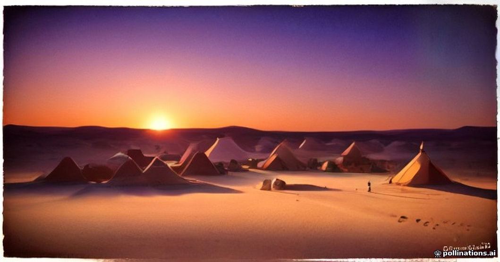

Winter brings crisp, clear blue skies to Erg Chebbi during the day, with comfortable temperatures around 15°C to 20°C (59°F–68°F). However, as soon as the sun drops behind the dunes, the desert loses heat rapidly. Between December and February, overnight temperatures frequently fall to between 0°C and 5°C (32°F–41°F), occasionally dipping slightly below freezing.
Canvas tents—even modern luxury tents with private bathrooms—do not hold heat like brick buildings. Understanding what desert camps actually provide for bedding and how to layer your clothing makes the difference between a cold night and a comfortable rest under the stars.
Real Night Temperatures: December to February
Daytime in winter is often the pleasant season for walking on the dunes or taking a camel trek. There is zero humidity, and daytime heat is rarely exhausting. However, radiative cooling means heat escapes instantly into the clear night sky as dusk arrives.
Expect the temperature inside your tent to be only 2°C to 4°C warmer than the outside air. Wind can also force cold drafts through tent zippers and woven floor matting, so prepared travelers plan to dress for outdoor conditions even when inside their tent.
What Camp Bedding Actually Provides
Standard and mid-range camps supply heavy acrylic or traditional woven Berber wool blankets stacked on top of a standard mattress. Luxury camps typically offer down-alternative duvets, additional fleece layers, and hot water bottles upon request.
Heating varies significantly by camp tier. Standard camps have no heat source in tents. Luxury camps occasionally offer small electric space heaters, but generator power is frequently turned off overnight, meaning heaters shut down after midnight. Relying on warm clothing rather than heaters is always the safest plan. For a breakdown of amenities, see our guide on desert camp tier comparisons.
Realistic Packing List for Desert Winter Nights
Packing for a winter desert trip requires a strict layering strategy rather than a single heavy coat. You will move from warm sun to near-freezing shade within thirty minutes during the evening sunset.
- Thermal base layer (merino wool or synthetic top and long underwear)
- Fleece pullover or lightweight down jacket for camp evenings
- Warm knit hat (beanie) and thick wool socks for sleeping
- Windproof outer jacket for sunset camel rides or early morning walks
- Lip balm and heavy moisturizer for the extremely dry winter air
High Atlas Mountain Snow and Driving Logistics
Remember that reaching Merzouga from Marrakesh requires crossing the Tizi n'Tichka pass in the High Atlas Mountains. In mid-winter, snowstorms can temporarily slow mountain traffic or require snow clearing.
Keep your heavy warm jacket, water, and snacks accessible inside the passenger cabin during the drive rather than packed deep in main luggage in the vehicle's trunk. You can read more about mountain road conditions in our Tichka Pass winter guide.
| Month | Day Temp (Avg) | Night Temp (Avg) | Bedding Provided | Recommended Sleepwear |
|---|---|---|---|---|
| December | 16°C (61°F) | 3°C (37°F) | Heavy wool/acrylic blankets or duvet | Thermal base layer, fleece top, wool socks |
| January | 14°C (57°F) | 1°C (34°F) | Multiple heavy blankets + hot water bottle | Full thermals, beanie hat, thick socks |
| February | 18°C (64°F) | 4°C (39°F) | Heavy blankets or medium duvet | Thermal bottoms, long-sleeve sweater |
| Early March | 22°C (72°F) | 8°C (46°F) | Standard duvet or two blankets | Light cotton pajamas or base layer |

Illustration, not a photograph — for the real thing, you'll have to stand on the ridge yourself.
Quick answers
A few follow-up questions travelers ask about this.
Is it too cold to sleep in a desert camp in January?
No, but you must dress properly. Camps provide thick blankets, but thermal long underwear, wool socks, and a warm beanie hat are essential for a comfortable sleep.
Do luxury desert tents have heating?
Some luxury camps provide small electric space heaters, but generator power is often turned off overnight, leaving the tent cold by 2 AM. Warm layers are still necessary.
Are hot showers available on cold winter mornings?
Solar hot water systems at desert camps take time to warm up in winter. Morning showers around sunrise are often cold; it is usually better to shower in the late afternoon before sunset.
Planning your own route?
Tell us your dates and what matters to you — we'll answer with a straight recommendation, not a brochure.
Send an inquiry See the itineraries